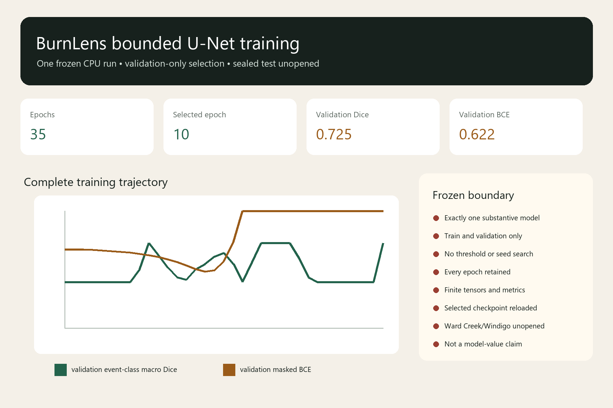

P3O1-T01-U04 • one substantive run
One frozen model, selected without test evidence
The exact bounded U-Net trained for 35 epochs. Validation selected epoch 10. Ward Creek and Windigo test arrays remain unopened.
Boundary
This is a validation-selected candidate, not a test evaluation or evidence of model value. Owner-approved prototype labels are not independent ground truth or field validation.
- Validation selection is not a locked-test evaluation.
- The frozen RBR baseline remains at the selected-core metric ceiling.
- Owner-approved prototype labels are not independent ground truth or field validation.
Rendered training evidence

Complete epoch history
| Epoch | Train BCE | Validation BCE | Event-class macro Dice | Event-class macro IoU | Worst-event macro Dice | Selected then |
|---|---|---|---|---|---|---|
| 1 | 0.702446043 | 0.672325308 | 0.392018779 | 0.330128205 | 0.333333333 | yes |
| 2 | 0.699159265 | 0.671666085 | 0.392018779 | 0.330128205 | 0.333333333 | yes |
| 3 | 0.696663976 | 0.669942591 | 0.392018779 | 0.330128205 | 0.333333333 | yes |
| 4 | 0.693321288 | 0.666971551 | 0.392018779 | 0.330128205 | 0.333333333 | yes |
| 5 | 0.688422322 | 0.662892348 | 0.392018779 | 0.330128205 | 0.333333333 | yes |
| 6 | 0.682377160 | 0.657708035 | 0.392018779 | 0.330128205 | 0.333333333 | yes |
| 7 | 0.674628973 | 0.651786379 | 0.392018779 | 0.330128205 | 0.333333333 | yes |
| 8 | 0.663852930 | 0.644351143 | 0.392018779 | 0.330128205 | 0.333333333 | yes |
| 9 | 0.649660349 | 0.634584557 | 0.503285727 | 0.407173660 | 0.450704225 | yes |
| 10 | 0.631507754 | 0.621963426 | 0.725352113 | 0.705128205 | 0.450704225 | yes |
| 11 | 0.608602881 | 0.606272143 | 0.621185446 | 0.533699634 | 0.450704225 | no |
| 12 | 0.580020368 | 0.586552079 | 0.518550642 | 0.420477042 | 0.450704225 | no |
| 13 | 0.543987751 | 0.562477649 | 0.433622026 | 0.355336538 | 0.416539827 | no |
| 14 | 0.499289691 | 0.533728844 | 0.413501801 | 0.342679226 | 0.376299376 | no |
| 15 | 0.444608390 | 0.503569187 | 0.503285727 | 0.407173660 | 0.450704225 | no |
| 16 | 0.379610568 | 0.482719748 | 0.547098993 | 0.447567230 | 0.450704225 | no |
| 17 | 0.307193160 | 0.493762773 | 0.609757325 | 0.518739316 | 0.450704225 | no |
| 18 | 0.233059973 | 0.568360556 | 0.643250306 | 0.564522145 | 0.450704225 | no |
| 19 | 0.161657631 | 0.730929231 | 0.547098993 | 0.447567230 | 0.450704225 | no |
| 20 | 0.091584019 | 1.070830789 | 0.392018779 | 0.330128205 | 0.333333333 | no |
| 21 | 0.046370663 | 1.172572788 | 0.560516948 | 0.461378205 | 0.450704225 | no |
| 22 | 0.015230702 | 1.557901706 | 0.725352113 | 0.705128205 | 0.450704225 | no |
| 23 | 0.007577452 | 2.032281032 | 0.725352113 | 0.705128205 | 0.450704225 | no |
| 24 | 0.001694985 | 2.496062310 | 0.725352113 | 0.705128205 | 0.450704225 | no |
| 25 | 0.000146153 | 2.989740807 | 0.725352113 | 0.705128205 | 0.450704225 | no |
| 26 | 0.000005293 | 3.615945386 | 0.598017647 | 0.504047124 | 0.450704225 | no |
| 27 | 0.000000052 | 4.576497461 | 0.433622026 | 0.355336538 | 0.416539827 | no |
| 28 | 0.000000000 | 5.926735782 | 0.392018779 | 0.330128205 | 0.333333333 | no |
| 29 | 0.000000000 | 7.552524438 | 0.392018779 | 0.330128205 | 0.333333333 | no |
| 30 | 0.000000000 | 9.407054933 | 0.392018779 | 0.330128205 | 0.333333333 | no |
| 31 | 0.000000000 | 11.469299209 | 0.392018779 | 0.330128205 | 0.333333333 | no |
| 32 | 0.000000000 | 13.715662313 | 0.392018779 | 0.330128205 | 0.333333333 | no |
| 33 | 0.000000010 | 16.119848884 | 0.392018779 | 0.330128205 | 0.333333333 | no |
| 34 | 0.000005146 | 18.426260477 | 0.392018779 | 0.330128205 | 0.333333333 | no |
| 35 | 0.000806907 | 15.235454859 | 0.725352113 | 0.705128205 | 0.450704225 | no |
Frozen selection and lineage
- Run
BL-2026-07-25-p3o1-t01-u04-training-r001- Source commit
5179a745f091c29d095461d511633f055967ef91- Protocol SHA-256
e2a0146ebcef4102b246f7a2117e09d21f441354eda0ceb4df764bbaebe940a6- Weights SHA-256
703d92577e2b82a4cfdec0c5e43b8d7a064253483de4ccea909209f54b802334- Disposition
candidate-frozen-pending-one-test-opening